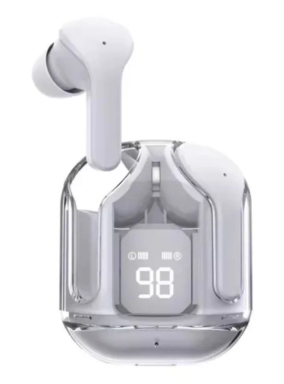

Sobre Volt Audio
Nuestra Historia
Volt Audio nació con el objetivo de ofrecer audífonos modernos, cómodos y con una excelente calidad de sonido para todos los amantes de la música. Desde nuestros inicios buscamos combinar tecnología, diseño y comodidad para brindar una experiencia única. Nuestro compromiso es ofrecer productos confiables que acompañen a nuestros clientes en su día a día, ya sea para estudiar, trabajar, practicar deportes o disfrutar de su música favorita.
Misión
Brindar productos de audio con tecnología innovadora, excelente calidad de sonido y un diseño moderno que se adapte a las necesidades de nuestros clientes. Buscamos ofrecer una experiencia única a través de audífonos cómodos, resistentes y accesibles, garantizando siempre un servicio de atención confiable y una mejora constante en cada uno de nuestros productos.
Visión
Ser una empresa líder en el mercado de dispositivos de audio, reconocida por la calidad, innovación y confianza que ofrecemos a nuestros clientes. Aspiramos a expandir nuestra presencia a nivel nacional e internacional, desarrollando productos que combinen tecnología, comodidad y un diseño atractivo para satisfacer las necesidades de cada usuario.
